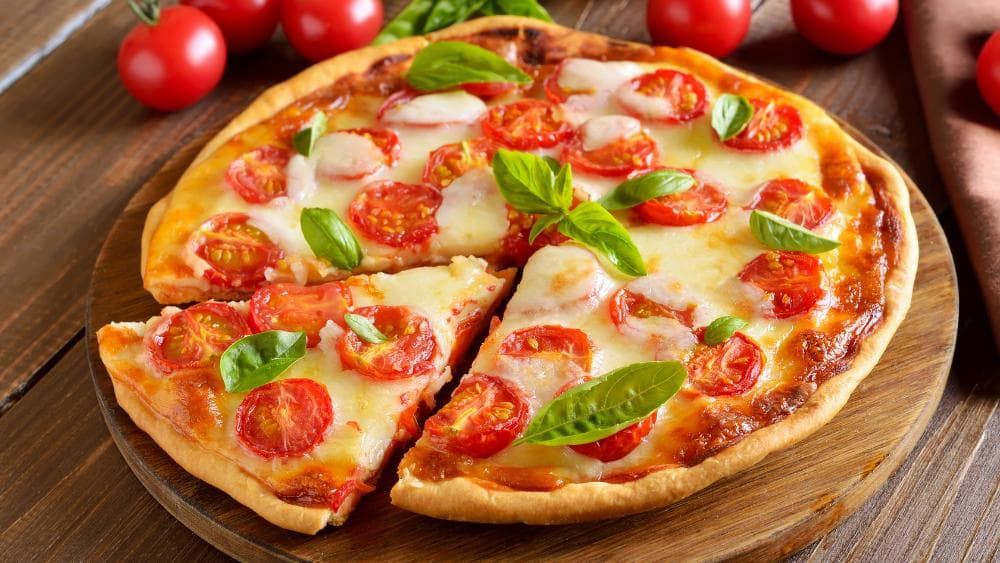

ESPECIALIDAD DE LA CASA: PIZZA MARGARITA
En Margarita Cocina compartimos la pasión por la buena comida y la creatividad en la cocina. Encontrá recetas fáciles, tradicionales, rápidas y deliciosos postres, explicados paso a paso con ingredientes precisos para que cocinar sea simple, divertido y lleno de sabor.
NUESTRAS FUENTES DE RECETAS

Las recetas de esta página nacen de experiencias, conversaciones e ideas creativas para compartir sabores simples y deliciosos.
EN QUE NOS BASAMOS PARA COCINAR

Creemos que cocinar bien puede ser simple, saludable y delicioso. Nuestras recetas combinan ingredientes accesibles, técnicas sencillas y el placer de compartir cada comida.